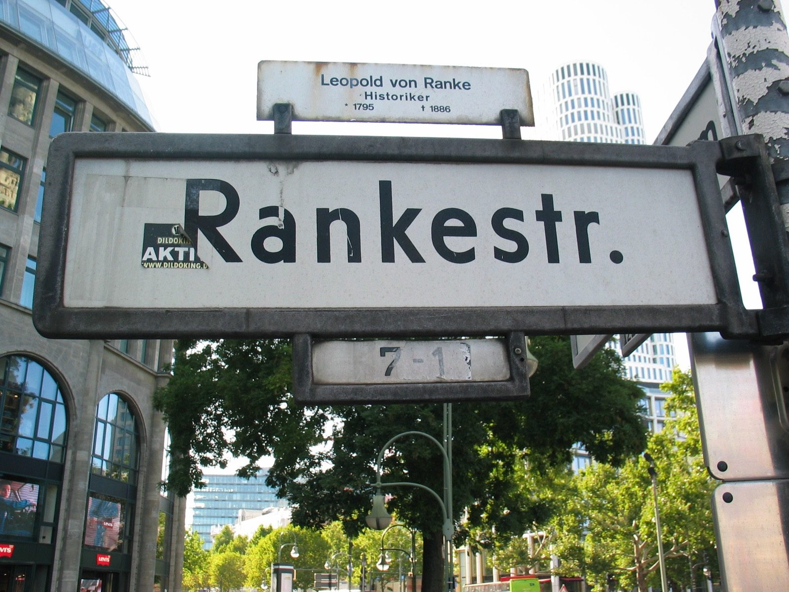

Kapitel 12 – Kunstnerisk frihedskæmper
Nolde kæmper en kunstnerisk kamp først og fremmest for sig selv. Derfor tilslutter han sig kun tøvende Neue Secession, hvor alle de unge malere arrangerer udstillinger i opposition til Berliner Secession. I striden om, hvor stor indflydelse udenlandsk kunst bør have i Tyskland, tager han ikke parti, selvom han i årtier har tordnet mod den franske impressionismes alt for store påvirkning af tysk kunst.